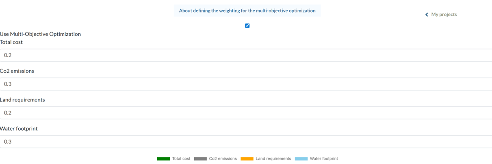

<main>
    <div>
        <p>
            The next step allows users to adjust the multi-objective optimization defining the weights for
            the different optimization objectives according to their project priorities. A simple cost optimization
            is conducted when the box “Use Multi-Objective Optimization” is left unticked. The optimization objectives
            are total annual cost (TAC), greenhouse gas emissions (GHG), land requirements (LR),
            and water footprint (WF) (introduced in Chapter 6). The weights are normalized and must sum up to 1.
            The screenshot shows this project step and an exemplary distribution of objective weights
            (Total cost: 0.2, CO2 emissions: 0.3, Land requirement: 0.2, Water footprint: 0.3.
            In order to conduct a single objective optimization, users assign a weight of 1 to the
            targeted objective and 0 to the others. The web app visualizes the weight distribution in a pie chart.
        </p>
        <p>
            
        </p>
    </div>
</main>
